This is a city in transition, coping resiliently and creatively with the aftermath of New Zealand's second-biggest natural disaster: the earthquake in 2011 (especially as tremors can still be felt regularly - in fact there was one the day after we flew back out to Singapore). We visited the now-abandoned cathedral which felt a very bleak spot with its heart ripped out. We found some vibrant bars and restaurants however and attended a food fair at the main Hagley Park.
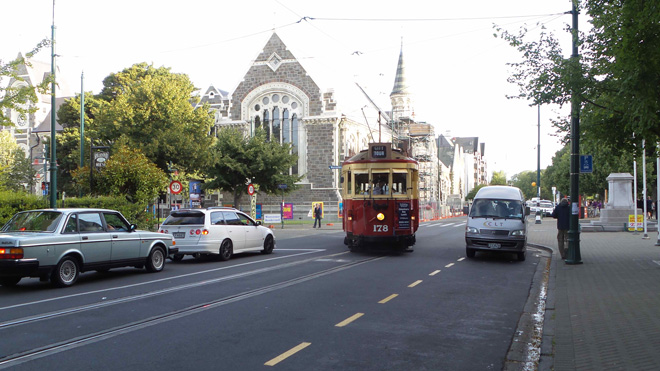
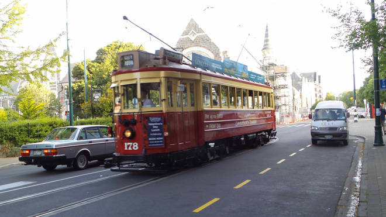
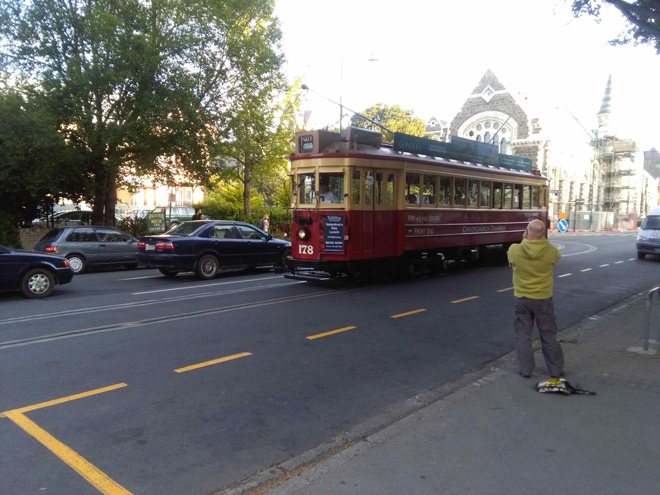
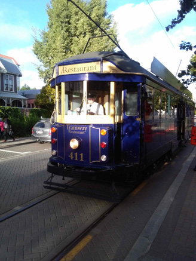
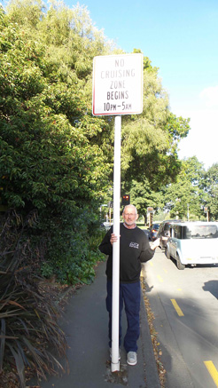
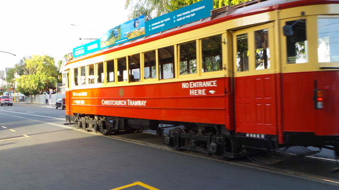
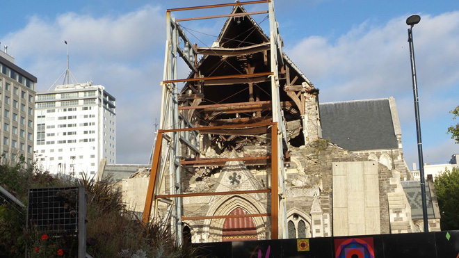
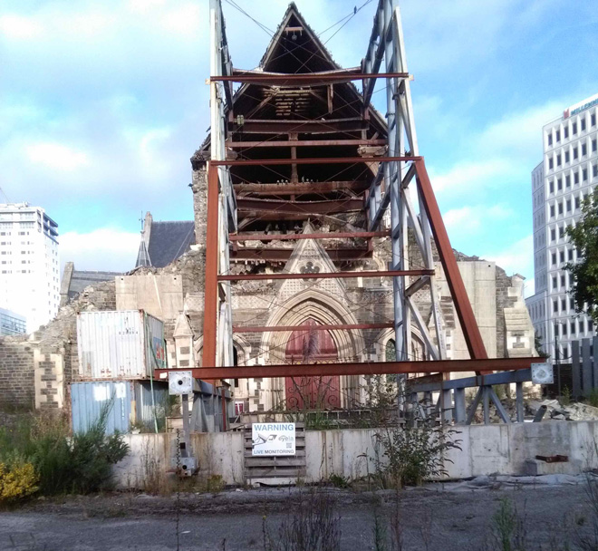
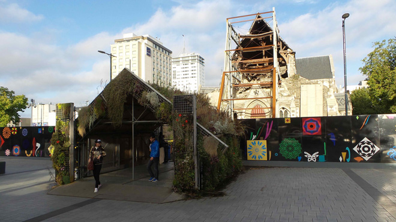
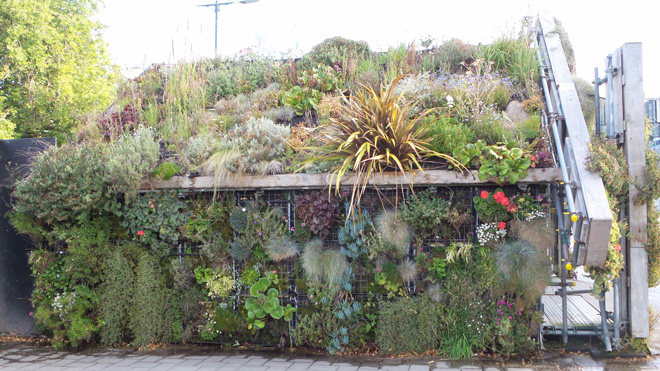
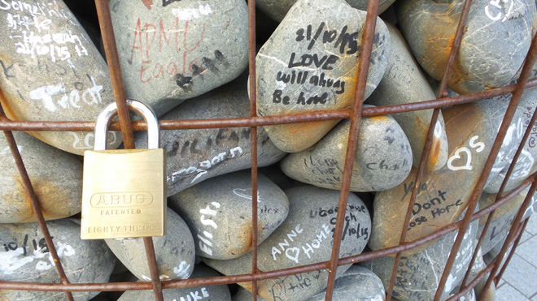
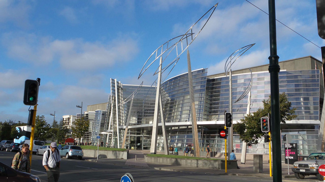
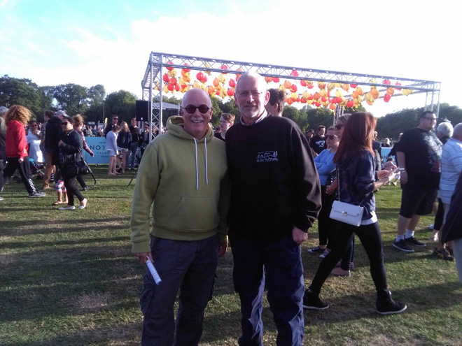
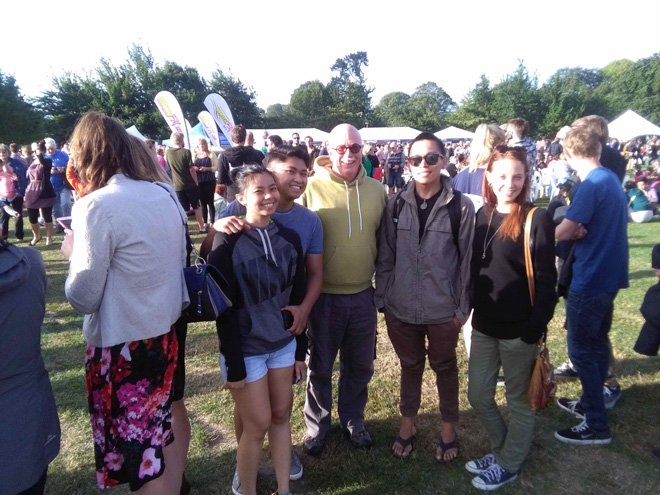
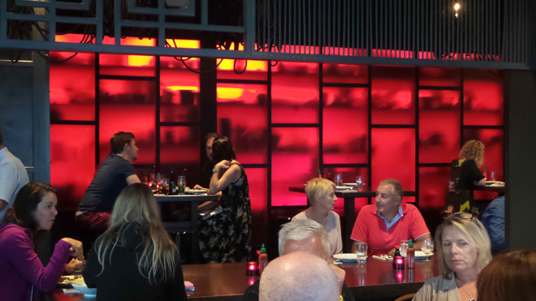
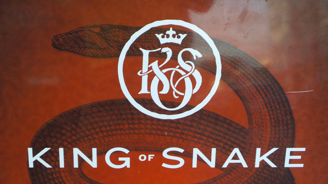
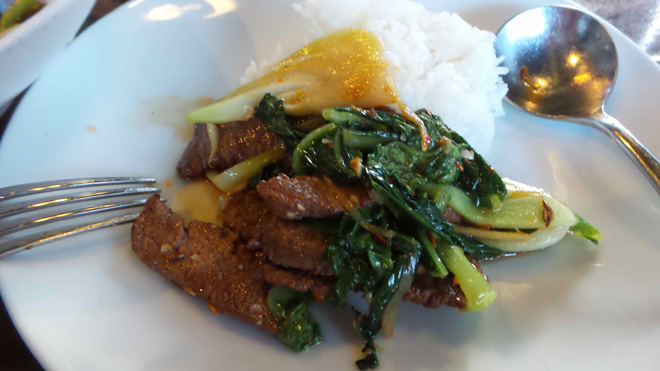
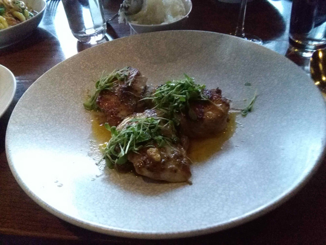
And now, at Christchurch Airport, we await our flight to Singapore and then a connection back to London. We've had a blast here in New Zealand and would definitely like to return and spend longer here next time.
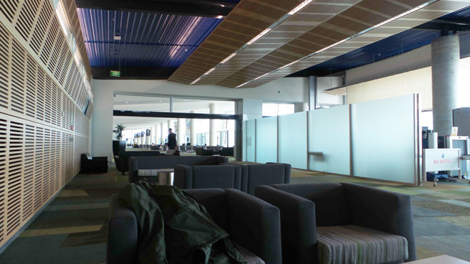